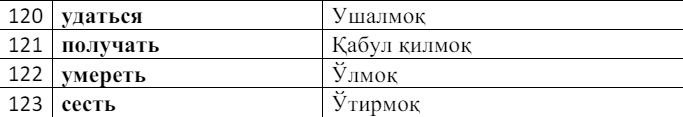

Тема: Алфавит, Ударения, Род'lar Алфавит - Alfabit, Ударения - Urg'u, Harflar birikmasi. Алфавит - Alfabit: Harflar birikmasi. В русском алфавите 33 буквы. 10 гласных букв, 21 согласная буква Гласнаю буква - unli harf. Согласная буква - undosh harf. А.a Б.b В.v Г.g Д.d
Е.ye Ё.yoЖ.ja З.za И.i
Й.ya К.ka Л.el М.em Н.en
О.o П.p Р.er С.es Т.t
У.u Ф.ef Х.ha Ц.tsa Ч.cha
Ш.sha Щ.shsha Ъ. Ы.-i Ь.
Э.e Ю.yu Я.ya
"Е" harifi so'zning boshida kelsa [ye] deb tallafuz qilinadi. So'zning o'rtasida kelsa [e] deb tallaafuz qilinadi. Ель => yel = archa Еда => yeda = ovqat Медведь => medved = ayiq Мел => mel = bo'r Ь: мягкий знак - yumshatish belgisi ь => Играть igra~t Ъ: твёрдый знак - ajratish belgisi ъ => Съел s-yel. Ударения - Urg'u: urg'u so'zda faqat bitta harfga tushadi, va o'sha urg'u tushgan harf balandroq talaffuz qilinadi qolgan harflarga nisbatan. Urg'uni 3ta qoidasi bor ular: 1- Urg'u so'zda faqat bitta harfga tushadi. 2- Urg'u faqat unli harflarga tushadi. 3- Urg'u tushgan harf biroz cho'zibroq talaffuz qilinadi qolgan harflarga nisbatan. 4- о - я - е. Agar so'zda bu harflarga urg'u tushmasa, bu harflar boshqacha talaffuz qilinadi. "о - а" "е - и" " я - е (bazida й deb ham talaffuz qilinadi)". "о - а" => хорошо, " я - е" => девять, "е - и" => тебя. Harflar birikmasi: ого - [ово] его - [ево] без этого - [беэ етово] сегодня - [севодня] чн - [шн] чт - [шт] конечно - [конешно] что - [што] жч - зч - сч - счт => [щ] мужчина - [мущина] род'lar: Rus tilida so'zlar yani 'ot'lar (otlarga nimalar kiradi? Biror narsaning nomi, gegrafik o'rin, davlat va shaxar nomlari, buyumlarning nomlari, atamalar va shaxslar kiradi.) Rus tilida birlikda so'zlar 3 родga bo'linadi. Мужской род - Женский род - Средний род. Род larni qanday bir biridan ajratish mumkinmi? Rus tilida so'zlar faqat birlikda род'larga bo'linadi. Rus tilida so'zlarning oxirgi harifi "а yoki я" harifi bilan tugasa Женский род ga kiradi. Сумка, Машина, тетя Rus tilidagi so'zlarning oxiri "е, мя, о" harifi bilan tugasa Средний род ga kiradi. Море, Имя, Окно Deyarli qolgan barcha harflar bilan tugagan so'zlar Мужской род ga kiradi. Стол Телефон Шкаф Ko'plik (Множественное число) Ko'plikda gapirish uchun so'zni oxiri "и yoki ы" hariflariga o'zgaradi. Телефоны, Игрушки, Розы М-род Ж-род С-род Мн-число Брат Сестра Окно Сёстры Телефон Комната Время Телефоны Город Работа Яблоко Яблоки Мой Мая Моё Мои Свой Свая Своё Свои Чей Чья Чьё Чьи Он Она Оно Они Istisno xolatlar! Erkak kishining nomlari bor, ularning ismi yoki atamasini oxirigi harifi "а yoki я" harifi bilan tugasa bir qoida bor. "Shaxsga nisbatan gapirilganda uning ismini oxirgi harifiga emas uning jinsiga qarashingiz kerak." Mison uchiun: дядя, папа, Юноша, Серёга Моя папа❌ Мой папа✅ Моя дядя❌ Мой дядя✅ - Здравствуйте -Добрый день -Меня зовут Кирил. Я учитель русского языка. А как вас зовут? -Меня зовут Гульноза. Я хочу изучать русский язык. Вы можете мне помочь? -Конечно могу. Когда вы хотите начинать? -Давайте сегодня начнём. -Извините сегодня я не могу. Потому что все уроки уже закончились. -Давайте завтра. Если вы не против? -Конечно не против тогда до завтра -Хорошо тогда до встречи -А во сколько я могу прийти завтра? -Можете подойти после всех уроков. -Хорошо я вас поняла учитель спасибо вам.
2-dars. Тема: O'tgan
Fel => ish xarakatini bildirubchi
so'zlar
Работать = is
Мужской род (birlik)
Я работал = Men ishladim
Ты работал = Sen ishlading
Он работал = U ishladi
Женский род (birlik)
Я работала = Men ishladim
Ты работала = Sen ishlading
Он работала = U i
Мн-число (ko'plik)
Мы работали = Biz ishladik
Вы работали = Sizlar ishladinglar
Они работали = Ular ishl
Rus tilida eng osson zamon bu
"o'tgan zamon"
Работать
Мужской род Работал
Женский род Работала
Мн-число Ра
Demak felni oxiridagi ть harflari
o'rniga
"...л, ...ла, ...ли" harflarini
qo'yish bilan o'tib ketgan zamonda
gapirish mumkin.
O'g'il bola ham работала yoki
qiz bola ham работал desa bo'ladimi?
Ha albatta, o'tgan darsdagi qoida:
"Shaxsga nisbatan gapirilganda
uning ismini oxirgi harifiga emas
uning jinsiga qarashingiz kerak."
yani o'g;il bola qizbolaga qarab
'я тебе позвонил, но ты не отвечала'
men senga qo'ng'iroq qildim,
lekin sen javob berm
Istisno xolat
Rus tilida
Нести - olib yurmoq
Идти - kelmoq, boqmoq
shunga o'xshash oxiri ти harflar bilan
tugaydigan so'zlar bor.
Bu so'zlar zamonlara o'zgaririlganda
boshqacha tuslanadi va kam
ishlatilinadi.Ularni o'rniga
o'tgan zamonda boshqa
so'zlar bor shuarni ko'rib chiqamiz.
Нести - olib yurmoq (o'rniga)
Принести - olib kelmoq
М-род: Я, ты, он - принёс
Ж-род: Я, ты, он - принесла
Мн-число: Мы, Вы, Они - принесли
Идти - kelmoq, boqmoq (o'rniga)
Прити - Kelmoq
М-род: Я, ты, он - Пришёл
Ж-род: Я, ты, он - Пришла
Мн-число: Мы, Вы, Они - Пришли
Прити - Kelmoq
Piyoda kelmoq
Я, ты, он - Пришёл
Я, ты, он - Пришла
Мы, Вы, Они -
Приехать - kelmoq
Transportda kelmoq
Я, ты, он - Приехал
Я, ты, он - Приехала
Мы, Вы, Они - Приехали
Моя, семья
Привет! Меня зовут Даврон. Я хочу
рассказать вам о своей семье.
Это мой папа. Его зовут Владимир.
Он инженер. Это моя мама.
Её зовут Наталья. Она́ врач. Это мой
брат.Его зовут Антон. Он студент.
Вот мой дедушка. Его зовут Валерий.
Он не работает, он пенсионер. Это моя
бабушка Светлана. Моя бабушка не
пенсионер, она преподаватель.
Это моя кошка. Её зовут Муся.
3-dars. Тема: Hozirgi
Hozirgi zamon (birlikda)
O'zbek tilida ish harakatini
bildiradigan so'zlarning
(fellarning) asosiy negizi
2 tur qo'shimcha bilan
aytiladi: moq - ish.
bormoq, kelmoq, yurmoq,
borish, kelish, yurish.
moq - ish so'zni tuslanmagan
shakli, yani felni shaxslarga
tuslanmagan shakli.
Rus tilida ham felni 2 turi
bor ать, ить ularni ushbu
tablitsa orqali ko'rib chiqmiz
O'zbek tili | Rus tili
Ishlamoq | Работать
Men ....yapman | Я ....ю (у)
Sen ....yapsan | Ты ....ешь (ишь)
U ....yapti | Он(а) ....ет (ит)
Qavsni tashqarisida turgan ю, ешь,
ет turlar 80% xolatda qo'llanadigan
qoidalar, qavs ichida turgan у,
ишь, ит turlar esa 20% xolatda
qo'llaniladigan qoidalar.Bularni
katta farqi yo'q asosan shu
qoidalarni bilsa bo'ldi.
80% Я работаю, Ты работаешь,
Он(а) работает 20% Я скажу
Ты говоришь Он(а) спросит
Istisno xolatlar:
Нести - olib yurmoq, Идти - kelmoq,
boqmoq. Bu so'zlar ham xozirgi
zamonda boshqacha tuslanadi
shuning uchunxam istisno xolat
Lekin bu so'zlarni ham tuslashni
o'rganishimiz kerak chunki rus tilida
ko'p ishlatilinadigan fellardan,
yani oxiri ти harflari bilan tugaydigan
fellar, bunaqa fellar ko'p
нести, идти, найти, прийти, уйти,
отойти, принести,
отнести, привезти, и так дале...
O'zbek tili | Rus tili
bormoq | идти
Men ....yapman | Я ....у
Sen ....yapsan | Ты ....ёшь
U ....yapti | Он(а) ....ёт
Я несу, | Ты несёшь, | Он(а) несёт.
Я иду, | Ты идёшь, | Он(а) идёт.
Oxirgi harifi ти bilan tugaydigan
fellar shu tarzda tuslanadi.
Hozirgi zamon ko'plikda:
Biz ishlayapmiz
Siz ishlayapsiz
Ular ishlayaptilar
O'zbek tili | Rus tili
Ishlamoq | Работать
Biz ..yapmiz | Мы ..ем (им)
Siz ..yapsiz | Вы ....ете (ите) SIz,
| SIzlar, Senlar
Ular ..yaptilar | Они ....ют (ят)
80% lik qoida
Мы работаем
Мы сейчас работаем
Вы работаете
Вы сейчас работаете
Они работают
Они сейчас работают
20% lik qoida
Мы говорим
Вы говорите
Они говорят
Я не в курсе - Meni habarim yo'q
Я в курсе - Meni habarim bor
Istisno xolatlar:
O'zbek tili | Rus tili
Bormoq | Идти
Biz boryapmiz | Мы идём
Siz boryapsiz | Вы идёте
Ular boryaptilar | Они идут
5-dars. Hozirgi zamon "ko'plik" :
Hozirgi zamon ko'plikda:
Biz ishlayapmiz
Siz ishlayapsiz
Ular ishlayaptilar
O'zbek tili | Rus tili
Ishlamoq | Работать
Biz ..yapmiz | Мы ....ем (им)
Siz ..yapsiz | Вы ..ете (ите) SIz,
| SIzlar, Senlar
Ular ..yaptilar | Они ....ют (ят)
80% lik qoida
Мы работаем
Мы сейчас работаем
Вы работаете
Вы сейчас работаете
Они работают
Они сейчас работают
20% lik qoida
Мы говорим
Вы говорите
Они говорят
Я не в курсе - Meni habarim yo'q
Я в курсе - Meni habarim bor
Istisno xolatlar:
O'zbek tili | Rus tili
Bormoq | Идти
Biz boryapmiz | Мы идём
Siz boryapsiz | Вы идёте
Ular boryaptilar | Они идут
Когда я приехал в Москву, я думал
что не надо изучать русский язык.
Потому что здесь очень много Узбеков.
Я могу же с ними общаться на своём
родном языке. Но один день вышел на
улицу, чтобы погулять. В магазине
купил напиток и потом пришёл в парк.
В тот момент ко мне пришла одна
русскаядевушка и что-то спросила,
а я не понял.Она опять что-то
говорила, говорила и ушла.Тут мне
стало очень стыдно. После этого
дня я начал изучать русский язык.
Тема: Вид глаголов - Fellarning
ko'rinishi.
Вид - ko'rinish, Глагол - Fel
Bugungi mavzuda :
Писать - Yozmoq, Написать - Yozmoq
Думать - O'ylamoq, Подумать - O'ylamoq
Спрашивать - So'ramoq, Спросить -
So'ramoq
Делать - Qilmoq, Сделать - Qilmoq
Приходить - Kelmoq, Прийти - Kelmoq
Bu so'zlarni qaysi birisi qaysi
ma'noni anglatadi?
Ikkalla so'znixam tarjimasi bir xil
bo'lsa, qaysi vaziyatda birinichi-
sini qaysi vaziyatda ikkinchisini
ishlatiladi?
Bugungi mavzuda manashu narsalarni
o'rganamiz.
Rus tilida fellarning ikki xil
ko'rinishi bor bular:
СВ Совершенный Вид
НСВ Не Совершенный Вид
НСВ СВ
Писать Написать
Думать Подумать
НСВ: Tugalanmagan zamon:
Bu turdagi fellarni ishlatib gapirsangiz,
sizni ish harakatingiz tugallanmaganini
*bildiradi.
Bu turdagi fellarni ishlatib gapirsangiz,
sizni ish harakatingiz tugallanmaganini
bildiradi.
СВ: Tugalangan zamon:
Bu turdagi fellarni ishlatib
gapirsangiz, sizni ish
harakatingiz tugallanganini
bildiradi.
НСВ'da takrorlanib turadigan
harakatga aytishiz mumkin.
СВ'da birmartalik tugalangan
arakatga aytishiz mumkin.
НСВ Hozirgi zamonda gapira olasiz:
Думаю - o'ylayapman,
Пишу - Yozyapman
СВ Hozirgi zamonda gapira olmaysiz:
Подумаю - o'ylab ko'raman,
Напишу - Yozaman
Misollar:
Я каждый день писал диктант. (НСВ)
Men har kuni diktant yozdim.
Я сегодня написал диктант (СВ)
Men bugun diktant yiozib qo'ydim
Что ты делаешь? - sen nima qilyapsan?
смс пишу.✅ sms yozyapman.
смс напишу.❌ sms yozman.
Подождите пожалуйста сейчас напишу
ваше имя✅
Iltimos to'xtab turing hozir ismingizni
yozib olay.
Подождите пожалуйста сейчас пишу ваше
имя❌
Iltimos to'xtab turing hozir ismingizni
yozyapman
Я всегда думаю об этом (НСВ)✅
Men har doim bu haqida o'ylab yuraman
Я всегда подумаю об этом (СВ)❌
Men har doim bu haqida o'ylab ko'raman
Fellarni qanday ajratib olsa bo'ladi
СВ yoki НСВ ekanligini?
СВ va НСВ'larni farqlash uchun 3 ta
uslub bor:
Префикс, Суффикс, разные слова
Префикс orqali fellarni oldiga
qo'shilgan qo'shimchalari
orqali СВ yoki НСВ'ga tegishli
ekanligini ajratib olasiz.
Mislolar:
НСВ Префикс СВ
Писать | Написать
Думать | Подумать
Делать | Сделать
читать | Прочитать
Смотреть | Посмотреть
! По, Про, С, На. Bu qo'shimchalrni
o'zini alohida manolari bor, ularni
kurs oxirida ko'rib chiqamiz
chunki ular katta mavzular.
Суффикс orqali fellarni o'rtasida bir
ikkita harflar o'zgaradi, shu orqali
СВ yoki НСВga
tegishli ekanligini ajratib olasiz.
Mislolar:
НСВ Суффикс СВ
Изучать | Изучит
Решать | Решить
Спрашивать | Спросить
отдыхать | Отдохнуть
Разные слова: СВ va НСВ bazida birxil
ma'noni bildirishi,lekin so'zlar xar
xil bo'lishi mumkin.
НСВ Разные слова СВ
Брать - olmoq - Взять
Говорить | Сказать
Gapirmoq | Aytmoq
O'zbek tilida ham ikki xil qilib
tarjima qilishimiz mumkin lekin
manosi bir xil deyarli Сказать ->
СВ
chunki Сказать'dan bir martda
foydalanamiz Говорить'dan davomiy
foydalanamiz chunki.
Я каждый день говорю✅
Я каждый день скажу❌
Вот наша аудитория. А это мой друзья.
Они иностранные студенты. Сейчас урок.
Мы изучаем русский язык. Сначала мы
ўчим русские звуки и буквы. Мы читаем,
пишем, говорим по-русски, но медленно
и ещё не очень хорошо. Сейчас мы пишем
и переводим русские слова. Это очень
трудно. Преподаватель читает слова,
а мы повторяем. Потом преподаватель
спрашивает, а мы отвечаем. Сначала
отвечает Жан. Мы слушаем, как он
отвечает. Он отвечает хорошо:
правильно и быстро. Потом отвечает
Аммар. Он говорит по-русски ещё не
очень хорошо. Потом мы пишем
упражнения и читаем новый текст
"Друзья". Текст большой и сложный.
Сначала текст читает преподаватель,
а мы слушаем. Потом текст читает Жан.
Он читает громко и быстро.Дальше -
Хасан. Он читает очень медленно.
Преподаватель говорит, что мы читаем
правильно. Вот и звонок. Перерыв.
Сейчас мы будем отдыхать.

Тема: Kelasi zamon
Быть - Bo'lmoq
Я буду - Men bo'laman
Ты будешь - Sen bo'lasan
Он(а) будет - U bo'ladi
Мы будем - Biz bo'lamiz
Вы будете - Siz bo'lasiz
Они будут - Ular bo'ladilar
НСВ СВ
Читать - o'qish - Прочитать
Agar biz kelasi zamonda СВ'da
yani bir mardtalik xolatda
gapirsak
Я прочитаю desak bo'ladi
faqat bir mardtalik xolatda
Я завтра прочитаю.
Men ertaga o'qib qo'yaman.
ertaga bir martda o'qib
qoyishni anglatadi
Agar biz НСВ'da Читать
felidan foydalansak
yani davomiy kelasi
zamonda
ushbu kelasizamon
qoidasidan foydalanamiz
Olmosh | быть | НСВ' fel
Я | буду | Читать
ТЫ | будешь | Читать
Он(а) | будет | Читать
Мы | будем | Читать
Вы | будете | Читать
Они | будут | Читать
Olmosh + быть felini
tuslangan holati +
kelasi zamonda
qilmoqchi bo'lgan
ish harakatiz
Я буду гулять
Men sayir qilaman ✅
Men sayir qilyapman
yoki sayir qildim ❌
Ты будешь работать ✅
Ты будешь работаешь ❌
Sen ishlaysan
Он будет играть
НСВ -> Это я буду делать
СВ -> Это я сделаю
НСВ -> Buni men qilaman
СВ -> Buni men qilib qo'yaman
Сейчас утро. Я и мой друзья
сидим в буфете. Мы завтракаем.
Вот стоит большая чашка.
Там зелёный чай. А вот стойт
стакан. Тут ананасовый сок.
Вот стойт тарелка. Там
лежат свежий хлеб, вкусное
масло и твёрдый сыр. Это
мой завтрак. А это мой
друг Ахмед. Его завтрак
– это молоко, хлеб и
фруктовый джем. А это
наша подруга Ванесса.
Её завтрак - это чёрный
кофе, вкусные торты и
свежее масло. Приятного
нам аппетита!
Тема: Местоимение -
Olmoshlar
Ushbu tablitsadagi
olmoshlardan
его/её - uni va uning degan
manoni ham bildiradi.
их daxam shunday
их - ularning
их - uni
их - ularniki
Сейчас утро. Я и мой друзья
сидим в буфете. Мы завтракаем.
Вот стоит большая чашка. Там
зелёный чай. А вот стойт
стакан. Тут ананасовый сок.
Вот стойт тарелка. Там лежат
свежий хлеб, вкусное масло и
твёрдый сыр. Это мой завтрак.
А это мой друг Ахмед. Его
завтрак – это молоко, хлеб
и фруктовый джем. А это наша
подруга Ванесса. Её завтрак -
это чёрный кофе, вкусные торты
и свежее масло. Приятного нам
аппетита!
Тема: Хотеть - Xohlamoq, Мочь - Qila Хотеть - Xohlamoq, Xozirgi va kelasi zamonda: Хотеть - Xohlamoq, Единственное число Birlik Я хочу Ты хочешь Он(а) хочешь Множественное число Koplik Мы хотим Вы хотите Они хотят qoidasi: Местоимение + хотеть + глагол Olmosh + xohlamoq + fel Я | хочу | Читать ТЫ | хочешь | Спать Он(а) | хочет | Играть Мы | хотим | Гулять Вы | хотите | Работать Они | хотят | Отдыхать Я хочу спать Men uxlashni xohlayan ✅ Men xohlayman uxlamoq ❌ Я хочу работать Men ishlashni xohlayman Ты хочешь спать Sen uxlashni xohlaysanmi? Я хочу играю ❌ Я хочу играть ✅ Men o'ynashni xohlayman Я хочу дальше управлять компанией ✅ Men kompaniyani yana boshqarmoqchiman O'tgan zamonda: Единственное число Birlik Я хотел (а) Ты хотел (а) Он(а) хотел (а) Множественное число Koplik Мы хотели Вы хотели Они хотели Я хотел работать Men ishlamoqchi edim ✅ Men xohlagandim ishlamoq ❌ они хотели нас посадить в тюрьму Ular bizmi qamoqqa tashlamoqchi edi Сергей я хотел у вас кое-что спросить Sergey men sizdan nimadur so'ramoqchi edim Мочь - Qila olmoq Xozirgi va kelasi zamonda: Единственное число Birlik Я могу Ты можешь Он(а) может Множественное число Koplik Мы можем Вы можете Они могут Местоимение + Мочь + глагол Olmosh + qila olmoq + fel Я | могу | Читать ТЫ | можешь | Спать Он(а) | может | Играть Мы | можем | Гулять Вы | можете | Работать Они | могут | Отдыхать Я могу работать Men ishlay olaman Я не могу работать Men ishlay olmayman Ты можешь подождать? Sen kutib turolasanmi? Ты могу помочь ❌ Ты можешь помочь ✅ Здравствуйте, чем я могу помочь? Salom, qanday yordam bera olaman? Терпеть не могу ✅ Ты можешь на завтра гулять? ✅ Прочти не могу ✅ O'tgan zamonda: Единственное число Birlik М-род [mog], Ж-род [magla] Я мог(а) Ты мог(а) Он(а) мог(а) Множественное число Koplik [magli] Мы могли Вы могли Они могли СВ я не смог это сделать НСВ я не мог это делать СВ'da c qo'shimchasi qo'shiladi va fel ham СВ'da bo'lishi shart Я | cмогу | Прочитать ТЫ | cможешь | Поспать Он(а) | cможет | Написать Мы | cможем | Погулять Вы | cможете | Сделать Они | cмогут | Отдохнуть 100% информация - Виктор, в вашем городе есть метро? - Нет, наш город небольшой. Люди ездят на автобусах и на трамваях. Мне нравится наш город. Он очень зелёный. Сейчас лето. Люди загорают в парках, купаются возёрах и в реке. В моём районе тоже есть небольшой парк. Завтра мы идём туда на пикник. А как твоя новая жизнь в ? Тебе нравится большой город? - И да и нет. Я живу далеко от центра. В моём районе нет метро. Поэтому каждое: утро я еду сначала на автобусе, а потом на метро. Я еду на работу долго. Утром в метро всегда тесно и душно, особенно лётом. Но в выходные здесь никогда не скучно. В театрах есть интересные спектакли. Летом в парках есть бесплатные концерты. Завтра мы с друзьями пойдём на экскурсию в Кремль. Я живу здесь уже полгода, а ещё не была в Кремле!
8-dars. Тема: Предложный
падеж (da qo'shimchasi)
"Падеж" tushunchasi:
Rus tilida 6 ta падеж bor
именительный падеж "-"
родительный падеж "ning / dan"
винительный падеж "ni / ga"
дательный падеж "ga"
предложный падеж "da"
творительный падеж
"Bilan / bo'lib"
именительный падеж:
Кто это?
Это мой брат ✅
именительный падеж'da ot'ga
hech narsa qoshilmaydi
shu sababdan bu mavzuni
o'rganmaymiz.
Bugungi mavzu: предложный
пажеж,единственное число.
'da' qo'shimchasi rus tilida
so'zni boshiga 'на' yoki 'в'
qo'shimchalari,
oxirida esa 'е' harifini
qo'shish orqali yasaladi.
formulasi: 'на' / 'в' ....е
в магазине - Magazinda
на стадионе - Stadionda
Qachon 'на' yoki qachon 'в'
предлог'idan foydalanamiz?
Usti va atrofi ochiq bo'lgan
joylarga 'на' qo'shimchasidan
foydalanamiz.
На улице, на столе,
Usti va ayrofi yopiq bo'lgan
joylarga va shaxar va davlat
nomlariga ham 'в'
qo'shimchasidan foydalanamiz.
в доме, в Ташкенте, в коробке
'da' qo'shimmchasini Rus
tilidagi
М-род' va Ж-род'dagi so'zlarga
qo'shish uchun
М-род'dagi so'zlni oxiriga 'е'
harifi qo'shiladi.
Ж-род so'zni oxiridagi 'а'
harifini olib tashlab
o'rniga 'е' harifi qo'yiladi.
Ж-род: работа
на работе
Завтра я буду на работе
Я сейчас в магазине
Предложный падеж nafaqat 'da'
qo'shimchasi beradi balki
'haqida' degan manosini ham
beradi.
Предложный падеж'ni o'ziga
biriktirilgan savollari bor
ular:
'о чём - nima haqida',
'о ком kim haqida',
'где - qayerda'
Ushbu savollarga предложный
подеж orqali javob beramiz.
haiqda qo'shimchasini
formulasi: о ......е
о чём ты думаешь?
думаю о работе.
о ком он думает?
он думает о маме.
где ты сейчас?
Я сейчас в России,
Ba'zi bir xolatlarda
so'zimizning oxiri 'е' bilan
tugamaydi.
'е' o'rniga 'и' qo'yiladi.
qoidasi quyidagicha:
So'zni (ot'ni) oxiri 'ь' bilan
yoki'ия' harflari bilan tugasa
so'zni oxiriga 'и' qo'yiladi.
Тетрадь - в тетради
Россия - в России
Стоматология - в стоматологии
Швейцария - в Швейцарии
предложный пажеж,
множественное число
"larda / lar haqida"
o'tgann darsdagi birlik
formulalari:
'на' / 'в' ........е (и),
о ......е (и)
Bugungi darsda ko'plik
formulalari:
'на' / 'в' ........ах (ях),
в магазинах - magazinlarda
в городах - shaxarlarda
на улицах - ko'chalarda
haiqda qo'shimchasini
formulasi: о ......ах (ях)
Девучка - qiz
о девучке - qiz haqida
о девучках - qizlar haqida
Istisno xolatlar:
So'zning oxiri qachon ях
ga o'zgaradi?
So'zning oxiri 'я' harifi bilan
tugaydigan atamalarga
"...larda" yoki "...lar haqida"
qo'shimchalarini qo'shish uchun
so'zni oxiri 'ях' ga o'zgaradi.
дядя
о дядях
тётя
о тётях
Предложный падеж'ning umumiy
formulalari:
'на' 'в' ......е - da
'на' 'в' .....ах (ях) - larda
о ......е - haqida
о ......ах (ях) - lar haqida
- Привет, мы пойдём завтра в
парк. Покормим белок, погуляем
и просто отдохнём от учёбы.
Ты пойдёшь с нами?
- Не знаю, мне надо подумать.
Вообще на завтра у меня есть
кое-какие планы. Во сколько
пойдёте?
- Примерно после обеда.
- Хорошо, думаю, я найду
время.
- Отлично! Буду ждать тебя
околовхода в парк!
- Хорошо, до встречи!
- Пока!

Тема: ga qo'shimchasi (jonli)
дательный падеж,
единственное-число
Har bitta падеж orqaali ma'lum
bir savolga javob beramiz.
O'tgan darsda
о чём, о ком, где
Bugungi mavzuni ham savollar
bor
Кому? - kimga?
Чему? - nimaga?
Misollar»
Rus tilida jonli narsalarga
"ga" qo'shimchasini
qo'shish uchun М-род so'zini
oxiriga 80% 'у' 20% 'ю'
harifini qo'shiladi.
formula: ......у (ю)
брат - aka
брату - akaga
друг - do'st
другу - do'stga
Я же сказал брату
Men akamga aytdimku
'ю' qo'shimchasi qaysi
holatlarda qo'shiladi?
М-род so'zini oxiri 'ь' yoki
'й' harflari bilan tugaydigan
so'zlarning
oxiriga 'ю' harifi qo'yiladi.
Николай - Николаю - Nikolayga
Водитель - Водителю - Haydovchiga
Игирь - Игирю - Igirga
Учитель - Учителю - O'qituvchiga
Женский род:
Ж-род dagi jonli narsalarni
oxirgi 'а' yoki 'я' harifi
o'rniga 'е' harifini qo'yish
o'rqali
"ga" qo'shimchasi qo'shiladi.
formulasi: ......е
Мама - Маме - Onaga
Сестра - Сестре - Opaga
Собака - Собаке - Kuchukga
Demak дательный падеж orqali
jonli narsalarga "ga"
qo'shimchasini qo'shar ekanmiz.
дательный падеж ni yana bir
qo'shimchasi bor:
Agar so'zni oldiga 'к'
qo'shimchasini qo'shadigan
bo'lsak
"nikiga" yoki "yoniga" degan
ma'noni beradi.
"ga" qo'shimchasini formulasi:
М-род ....У - брату - akamga
Ж-род ....е - маме - onamga
"nikiga" va "yoniga"
qo'shimchalarini formulasi:
М-род к ....У - к другу -
do'stinni yoniga
Ж-род к ....е - к сестре -
opamnikiga
Istisno xolatlar:
Ж-род da atamalar bor lekin
u erkak kishi
Misol uchun
Папа
дядя
Серёга
bular qoida bo'yicha ж-род ga
kirishi kerak, lekin u erkak
kishi
Bunday holatda bular xuddi
ж-род dagidek o'zgaradi.
папа - папе
дядя - дяде
Серёга - Серёге
дательный падеж множественное
число (jonli)
Ko'plikda biz so'zlarni род
larga ajratmaymiz.
Rus tilida "larga"
qo'shimchasini qo'shish uchun
so'zni oxiriga 80% 'ам' 20%
'ям'qo'shimchalari qo'shiladi.
formulasi: ........ам (ям)
врач - shifokor
врачам - shifokorlarga
Девочка - qiz
Девочкам - qizlarga
'ям' qo'shimchasi:
So'zni oxiri 'я' yoki 'ь'
harifi bilan tugagan so'zga
"larga"qo'shimchasini qo'shish
uchun
so'z oxiri 'ям' ga o'zgaradi.
Учитель - Учителям
водитель - Водителям
Дядя - Дядям
"larnikiga" "lar yoniga"
formulasi:
к ......ам (ям)
родителям - ota-onamlarga
к родителям - ota-onamlarnikiga
Привет, Луйс!
Как ты? Как твой дела на работе?
Как дела дома? У меня всё
хорошо. Я уже две недели живу
в Москве. Я люблю этот город.
Тут очень красиво, но холодно.
Я люблю гулять в центре и
смотреть на снег. Ты знаешь,
что я люблю, когда на улице
солнце. Но, к сожалению, в
Москве сейчас очень мало
солнца, но много снега. Ещё
у меня есть русская подруга.
Её зовут Катя. К счастью,
она говорит по-английски,
и я могу понимать её. Катя
любит танцевать. Завтра мы
идём в клуб. У нас будет
свидание. Я думаю, что я
люблю её. Я всё время думаю
о ней
Тема: Родительный падеж,
единственное число
(ning / dan)
вопросы: кого? - kimning?,
чего? - nimaning?
1-navbatda ning qo'shimchasini
o'rganamiz.
Rus tilidagi so'zlarga 'ning'
qo'shimchasini qo'shish
uchun so'zlarni (М-род) va
(Ж-род)ga ajratib o'rganamiz.
Мужской род:
(М-род)dagi so'zlarning oxiriga
'ning' qo'shimchasini qo'shish
uchun so'zning oxiriga 80%
holatlarda "а" yoki 20%
holatlarda "я" harflari
qo'shiladi.
Formulasi: ........а (я)
Цена телефона - Telefonning
narxi
Дом брата - Akamning uyi
Центр города - Shaxarning
markazi
Qachoy"я"harifi bilan tugaydi?
Qachon so'zning oxiri "ы" yoki
"й" harflari bilan tugasa
ushbu harflar o'rniga "я"
harifi bilan tugaydi.
Учитель - Учителя =
O'qituvchining
Водитель - Водителя =
Haydovchining
Сергей - Сергея = Sergeyning
Назовите пожалуйста номер
водителя
Iltimos haydovchining raqamini
aytib yuboring
Женский род:
(Ж-род)dagi so'zlarning oxirgi
harifi "ы" yoki "и" harifiga
o'zgartirish orqali 'ning'
qo'shimchasi qo'shiladi.
Formulasi: ......ы (и)
Машина - машины = moshinaning
Регистрация - регистрации =
ro'yxatning
Qachon "ы" qaachon "и"
ishlatiladi?
Qachon (Ж-род) dagi oxirgi
"а / я" harflardan oldin к,
х, г, ш, щ, ч, и, ж, ия ushbu
harflar bo'lsa so'zni oxiri
"и" bilan tugaydi.
Регистрация - Регистрции
ручка - Ручки
Россия - России
Остановка - Остановки
Правило родительного падежа
(М-род) ......а (я)
(Ж-род) ......ы (и)
Эти деньги брата - Bu akamning
pullari
Эти деньги Мамы - Bu onamning
pullari
dan qo'shimchasi:
'dan' qo'shimchasini qo'shish
uchun
"с, из, от" qo'shimchalari
so'zni oldidan
qo'shilishi kerak.
Formulasi:
Мужской род
из/с/от ......а (я)
Из магазина - magazibdan
с телефона - telefondan
от брата - akamdan
"из" "с" "от" qo'shimchalarini
farqi nimada?
"из" qo'shimchasi usti yopiq
joylar, buyumlar, davlat va
shaxar nomlari oldidan
qo'yiladi.
из магазина - magazindan
Я из Узбекистана - men
O'zbekistondanman
"с" предлог usti ochiq joy va
buyumlar oldiga qo'yiladi.
со стадиона - stadiondan
"от" qo'shimchasi shaxslarni
oldiga qo'yiladi.
от брата - akamdan
от друга - do'stimdan
Женский род
из/с/от .....ы
из машины - moshinadan
с улицы - ko'chadan
от мамы - onamdan
Машины - moshinaning
из Машины - moshinadan
улицы - ko'chaning
с улицы - ko'chadan
брата - akamning
от брата - akamdan
umumiy qoqida
(М-род) ...а (я) = ...ning
(Ж-род) ...ы (и) = ...ning
(М-род)"с, из, от" ...а(я)=...dan
(Ж-род)"с, из, от" ...ы(и)=...dan
Меня зовут Михайл. Я люблю свою
жену. Но я ненавижу, когда она
тратит слишком много денег на
одежду или обувь.Она очень
любит красивую обувь, и когда
в магазине скидки, она просто
не может себя контролировать.
«Я так хочу эти туфли», -
говорит она. Я отвечаю ей, что
это дорого и что у неё уже есть
15 пар обуви и что мы должны
экономить. Но она меня даже
не слушает. Она говорит, что
я трачу слишком много денег
на машину и сигареты, что,
конечно, неправда. Но я не
хочу скандал. В результате я
покупаю новые туфли и новые
сапоги за 15 тысяч рублей
Тема: родительный падеж единственное число 2 - часть родительный падеж'ning ma'lum bir o'ziga biriktirilgan o'zlari bor, u so'zlardan keyin родительный падеж'ning qoidasiga boysinish kerak bo'ladi biriktiran so'zlar: нет - yo'q до - gacha для - uchun без - ....siz кроме - ....dan tashqari около - yaqin (atrofida) вокруг - atrofida возле - yonida ushbu so'zlardan keyin (М-род) ........а (я) va (Ж-род) ........ы (и) qo'yishimiz kerak. Misollar: У меня нет телефона У меня нет стакана Сколько км из Самарканда до Ташкента? Qancha km Samarqandan Toshkentgacha Я не могу пить кофе без сахара Men shakarsiz kofe icholmayman В нашей команде находятся в Узбекистане кроме Акмала Akmladan tashqari bizning kamandadagi barcha Oz'bekistonda turibti Мы купили новый стол для офиса Biz ofis uchun yangi stol sotib oldik Вон там есть аптека около фонтана Xuu anavi yerda dorihona bor fantanning yaqin atrofida Вокруг моего дома есть магазин, аптека, торговый центр и еще много чиго. Mening uyim atrofida do'kon, dorixona, savdo markazi va yana ko'plab narsalar bor Я потерял свой телефон возле больницы Kasalxona yonida telefonimni yo'qotib qo'ydim agar yonida atrofida 1 ta narsani aytmoqchi bo'lsak около ni,agar ko'proq narslarni aytmoqchi bo'lsak вокруг ni ishlatgan yaxshi Yana bir дательный падеж'ni qoidasi: agar дательный падеж ga biriktirilgan so'zlardan keyin olmoshlar kelsa дательный падеж'ni qoidasi bo'yicha olmoshlar ham o'zgarishi kerak. quyidagicha Я - меня Ты - Тебя Он - его Она - её Мы - нас Вы - вас Они - их Mendan tashqari - кроме меня ✅ Mendan tashqari - кроме я ❌ Sen uchun - для тебя ✅ Sen uchun - для ты ❌ U yo'q - нет его ✅ U yo'q - нет он ❌ Biz uchun - для нас ✅ Biz uchun - для вы ❌ Sizlar siz - без вас ✅ Sizlar siz - без вы ❌ Ular gacha - до них ✅ Ular gacha - до они ❌ Olmoshlar Предложный падеж shaklidaNa'muna gaplar Вся ответственность на вас - barcha mas'uliyat sizda Дело не в тебе, а во мне - gap sendamas, menda Перестань о ней думать – u haqida o'ylashni bas qil. - Добрый день. Скажите, пожалуйста, где здесь магазин «Дом книги»? - Вот он, справа. - Большое спасибо! - Вы иностранец? - Да. - А откуда вы? - Из Колумбии. Мой родной город - Ташкент, но сейчас живу в Москве. Меня зовут Аллаберган. А вас? - Меня Алиса. - Очень приятно, Алиса. - А как давно вы живёте в Москве? - Я в Москве недавно. Я живу тут только 3 месяца, но я ещё плохо говорю по-русски и не знаю, где и что находится. - Понимаю. Я тоже иду в «Дом книги». - Правда? Пойдёмте вместе? - С удовольствием
Olmosh Я Ты Она Мы ВЫ Они Olmosh Предложный падеж shaklida Обо мне
Во мне
На мнеО Тебе
В Тебе
На тебеО нём
В нём
На нёмО ней
В ней
на нейО нас
В нас
На насО вас
В вас
На васО них
В них
На них
Тема: Родительный падеж
множественное число.
......larning / .....lardan
Родительный падеж ko'plikda ham
род'larga bo'linadi
М-род: .....larning
Rus tilida Мужской род'dagi
so'zlarga larning qo'shimchasini
qo'shish uchun so'z oxiriga "ов"
hariflarini qo'shish kerak
Formulasi:....ов - ....larning
Магазинов - Magazinlarning
Врагов - Dushmanlarning
Надо выписать адреса всех
магазинов
Barcha magazinlarning
manzillarini yozib olish kerak
М-род: .....lardan
So'zlarning oxiriga lardan
qo'shimchasini qo'shish uchun
esa yuqoridagi qoidani oldidan
"из / от / с" qo'shimchalardan
birini vaziyatga qarab qo'yib
va oxirida esa "ов" hariflarnini
qo'yish orqali yasaladi.
Formulasi из / от / с ......ов
- ......lardan
из магазинов - magazinlardan
от врагов - dushmanlardan
с берегов - qirg'oqlardan
Родительный падеж'ni o'ziga
biriktirilgan so'zlari bor edi
o'sha so'zlardan keyin
Родительный падеж'ni
qoidasiga bo'ysinishimiz
kerak edi va ko'plikda ham
ushbu qoidaga bo'ysinish
kerak, masalan:
из магазинов - magazindan
до городов - shaxargacha
без телефонов - telefonlarsiz
для программистов - dasturchilar
uchun
нет наушников -
quloqchinlar yo'q
кроме бананов - bananlardan
tashqari
около ресторанов - restoranlar
yaqin atrofida
вокруг столов - stol atrofida
возле инструментов - asboblar
yonida
Ж-род: .....larning
Rus tilida Ж-род'dagi
so'zlarga larning qo'shimchasini
qo'shish uchun so'z oxiridagi
"а / я" harflarini olib tashlash
kerar boladi misollar:
Formiulasi: ......*
подруга - dugona
подруг* - dugonlarning
мама - ona
мам* - onalarning
......lardan
ushbu yuqoridagi qoida oldidan
"из / от / с" qo'shimchalaridan
biri va ot'ning oxiridagi harfini
olib qo'yish
Fromulasi "из / от / с" ......*
из машин - moshinalardan
от сестер - opalardan
с улиц - ko'chalardan
Родительный падеж'ni o'ziga
biriktirilgan so'zlari bor edi
o'sha sozlardan keyingi so'z
ж-род'da bo'lsa ж-род qoidasi
bo'yicha gapiriladi
Istisno xolatlar
Тетрадь - daftar
Тетрадей - daftarlarning
Вещь - narsa
Вещей - narsalarning
Семья - oila
Семей - oilalarning
Дочь - qish(farzand)
Дочерей - qishlarning(farzand)
Мать - ona
Матерей - onalarning
umumiy qoqida
(М-род)......ов = .....larning
(Ж-род) .....* = .....larning
(М-род) "с, из, от"
........ов = ........lardan
(Ж-род) "с, из, от"
........* = ........lardan
eslatma:
ushbu qoida 80, 90%lik qoida
Я недавно приехал в Москву.
Конечно, я мечтаю об интересной
весёлой жизни, о друзьях,
о красивых девушках.Да, особенно
о русских девушках, потому что
они настоящие красавицы.
Я встречаю симпатичных девушек
в парке, на улице, на стадионе.
Но как познакомиться? О чём я
могу спросить незнакомую
девушку на улице? Где
находится остановка автобуса
123? На какой площади
находится Большой театр?
Который час? Я не могу
задавать девушке такие
глупые вопросы!
Когда я иду в кафе, я
вижу, что там тоже отдыхают
и разговаривают девушки.
Много девушек. Интересно, о
чём они так весело болтают?
О чём они спрашивают друг
друга – о погоде, о спорте,
о музыкальной группе, о моде,
о последнем фильме? А может,
они болтают о своих знакомых?